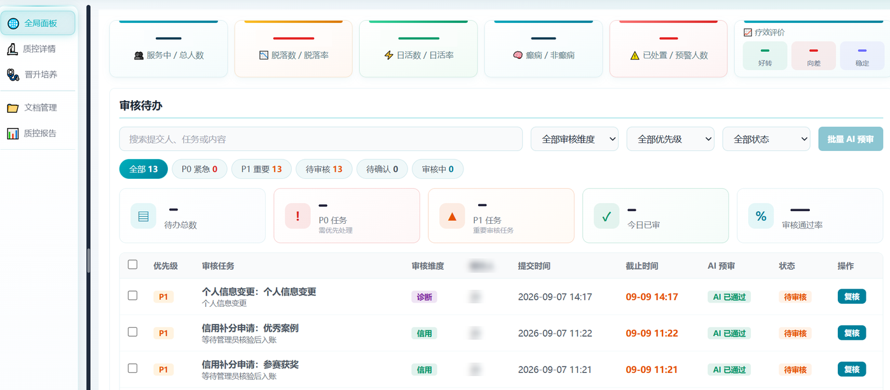
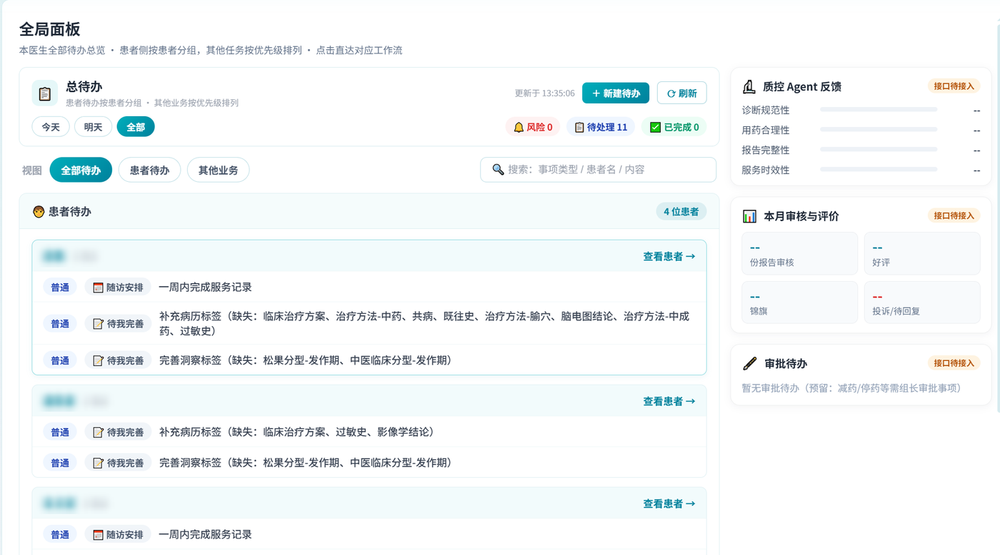

四个支柱
AI Coding 的产出质量不取决于提示词技巧，而取决于「上下文是否充分、边界是否明确、结果是否可验证」。我把这三点工程化成了四个可复用支柱。
① 规则化上下文
用规则文件把团队约束固化，Agent 每次开工都自带"团队常识"。
CLAUDE.md：项目知识库与协作入口.claude/rules/：公共组件使用规则，避免重复造轮子- Monorepo 分层约束：core 不可反向依赖 apps
② 方案驱动开发
先写方案与验收标准，再让 Agent 实现——把"需求分析到交付"变成可执行规格。
docs/superpowers/plans/：设计方案docs/superpowers/specs/：规格与验收定义- 10 章节实施方案：范围 / 数据口径与 Mock / 接口约定 / 状态算法 / 任务拆分 / 验收标准
③ 契约即上下文
接口契约与交接文档让 Agent 与人都能"拿到就能做"。
- 《后端接口交接文档》：响应包裹、代理规则、按患者数据隔离、SSE 缓冲
- 质控面板 API 交接文档：5 个接口约定 + 关键枚举 + 错误行为
HANDOVER.md：跨会话 / 跨人续做上下文
④ 自动化验收 Harness
每个功能都定义"机器可判定"的完成标准，不靠口头确认。
- Vitest + @vue/test-utils：面板状态与渲染断言
- CDP 浏览器自动化：900 / 1100 / 1440 / 1920 四档分辨率
- 截图留档 + DOM 文本导出，可回归、可比对
⑤ 小步交付与规范
让 diff 可 review、可回滚、可追责。
- 独立分支 + 功能粒度提交（平均单月 149 次）
- Commitlint / ESLint / Prettier / Husky 前置校验
- 文档与代码同步更新（接口 / 方案随实现迭代）
⑥ 领域约束前置
医疗场景的数据边界与权限约束，必须在上下文里说清楚。
- 按患者数据隔离（member 维度），避免跨患者缓存
- AI 输出需可审核、可修改、可追溯（labelData 同义词匹配兼容历史数据）
- 三环境隔离（dev / uat / prod），防止测试污染生产
案例研究：质控工作站全局面板（0 → 1）
一个真实交付闭环：从 10 章节方案到多分辨率验收，全程用 AI Coding 协作完成，人负责判断与验收标准。
① 方案与验收标准
范围界定（本期做 / 保留壳层）、页面结构与视觉基准、数据口径与 Mock 一致性锚点、5 个接口约定、状态算法（"患者待关注"公开规则）、12 项实施任务、验证与验收标准。
② 契约与类型先行
先定 7 个 API 模块的请求 / 响应类型与 Mock 数据（全联调模式），让前端在后端就绪前独立推进，也让 Agent 有确定结构可依。
③ 组件与状态实现
组级指标、工作组两级展开、审核待办、文档管理、ECharts 可视化、中英 i18n；侧栏双击收起、筛选保活等交互细节按方案落地。
④ 自动化验收
面板单测覆盖状态与渲染；浏览器自动化在 900 / 1100 / 1440 / 1920 下截图留档，配合 DOM 文本导出核对信息层级与文案口径。
⑤ 交付与迭代
功能粒度提交、文档同步；后续迭代中修复交互边界、弹窗自适应、状态口径等缺陷 40+ 处，全部走同一套验收流程。


评测视角：我会怎样给 Coding Agent 做 Harness
在实习里做的是"给人用的验收回路"，本质上与给 Agent 做评测是同一件事：定义任务、定义可判定的成功标准、可重复执行、能看回归。
可复用清单
- 先方案后编码：范围与验收标准前置，Agent 只负责在边界内实现
- 规则文件化：把"口头共识"变成 Agent 每次必读的约束
- 契约先行：接口文档 + 类型定义 + Mock，是最高性价比的上下文
- 完成标准机器可判定：单测 / 截图 / DOM 断言，而非"看起来没问题"
- 小步提交：功能粒度 diff，便于 review、回滚与归因
- 交接文档化：让下一个人（或下一轮会话）能无损续做
常见失败模式与对策
- 幻觉 API / 隐式改坏无关代码 → 限定可改范围 + 强制跑验证 + 小步提交
- 上下文过载 → 分模块给文件、用摘要式文档替代全量代码
- 测试写得过松 → 人工 review 测试断言，把验收标准写进方案
- 越界重构 → 规则文件明确禁止项，必要时回滚
想聊聊 AI Coding 基建？
我对「AI Native 研发工具 / 上下文管理 / Coding Agent 评测」这条线很感兴趣，也愿意把它和医疗场景结合起来做。